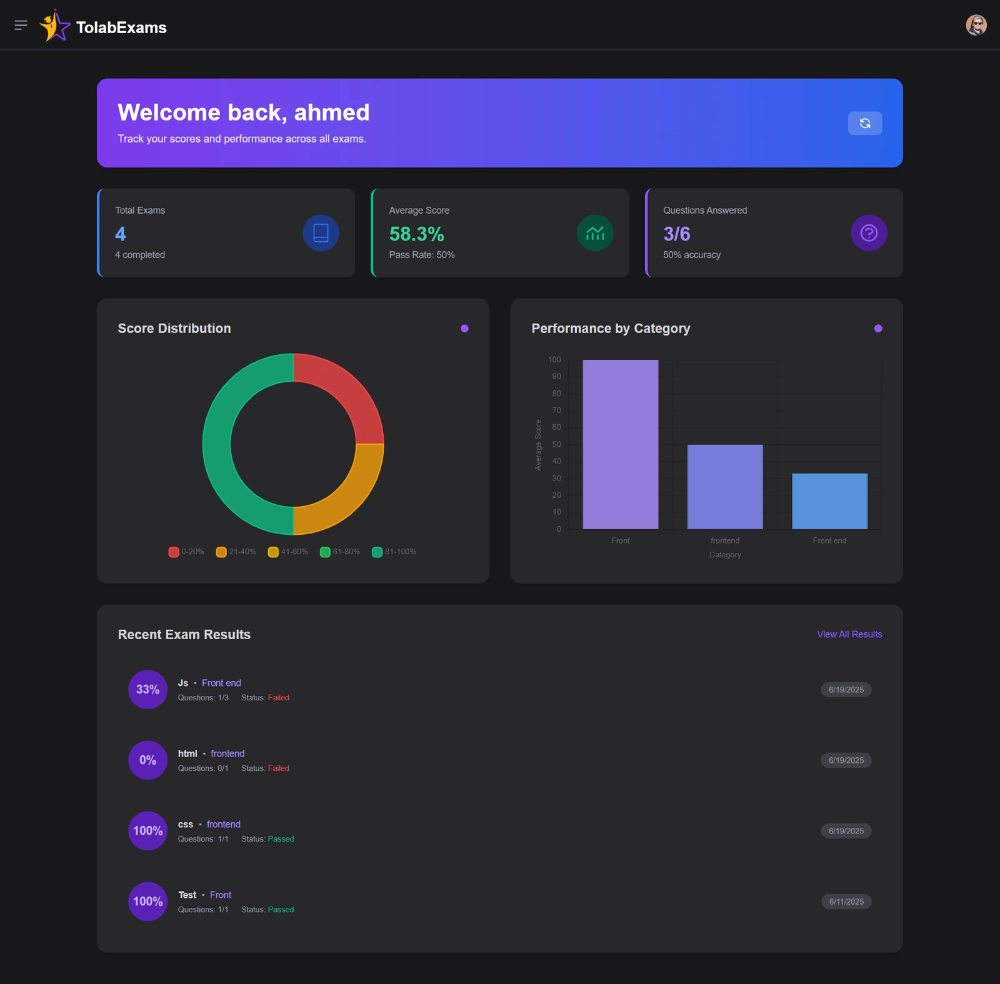

Online Testing
TolabExamSmart online exam system · Full stack examinationLive

- Role
- Full stack architecture & development
- Key focus
- Live proctoring
- Highlight
- JWT auth
Project overview
Full-stack smart examination system with real-time student monitoring, analytics dashboards, and secure
role-based JWT authentication.
Technologies & architecture
- Angular
- Tailwind CSS
- Chart.js
- Node.js
- Express
- Prisma ORM